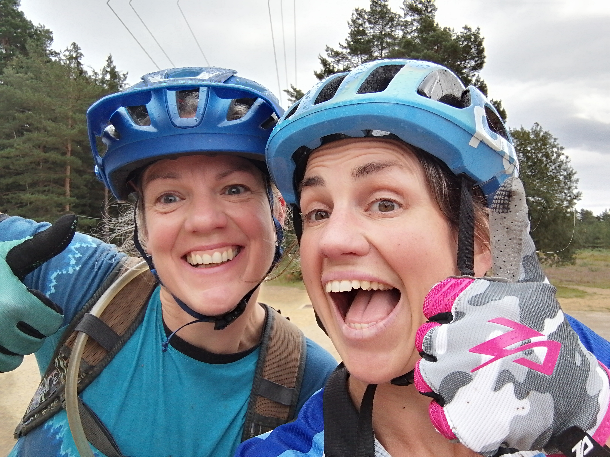
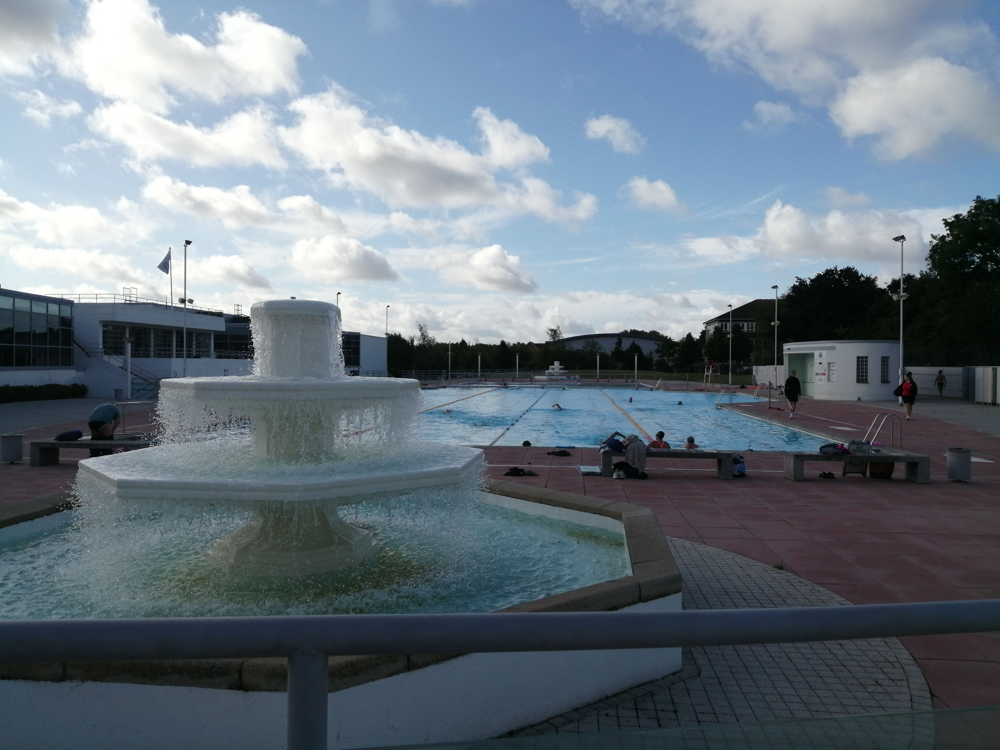

An expert in stress management and overwhelm I am now fully equipped to manage time and organise myself and others effectively. This includes trips away having to pack for most eventualitles and coping well when I didn't go as far as bringing the kitchen sink.
I try my hardest not to take time for granted. Time spent outside and exercising is time well spent. Even better if it's with people you love. I use my fear of time ticking away to propel myself into doing, not just planning to do.
 